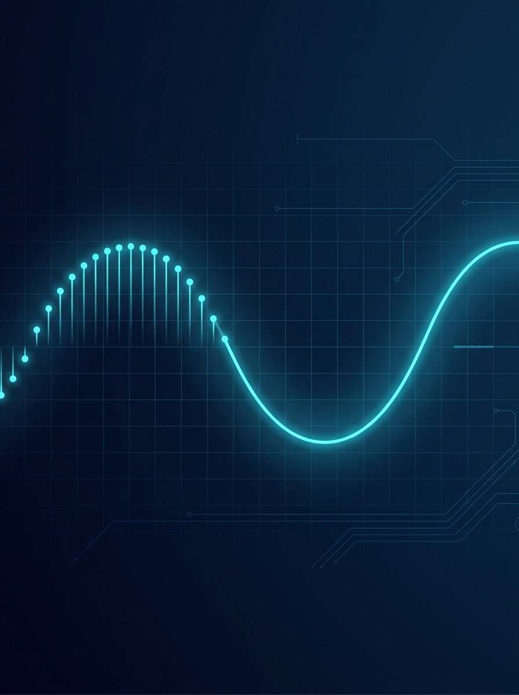

The Nuts and Bolts of
Arbitrary Waveform Generation
Berkeley Nucleonics Corporation
First Edition · 2026
A Message from the President
Engineers who are new to arbitrary waveform generation often discover the same gap: the instrument manuals cover the controls, and the textbooks cover the theory, but nothing in between explains how to think about the two together. That is the gap this book is written to close. Whether you are choosing your first AWG, building a multi-channel radar test bench, or trying to understand why your reconstructed signal looks nothing like the waveform you loaded, the answer is in here.
Berkeley Nucleonics has been making precision signal and timing instruments for more than six decades, and arbitrary waveform generation sits right at the center of where the field is going. Faster DACs, deeper memory, tighter phase coherence across channels are moving quickly, and that is genuinely exciting. We built our AWG family to keep working engineers ahead of that curve. We hope this book helps you get the most out of it.
David Brown
President, Berkeley Nucleonics Corporation
Principles of Arbitrary Waveform Generation
A Working Engineer's Primer on Arbitrary Waveform Generators
First Edition, 2026

Foreword
Every signal a system will ever face in the field can be written down as a sequence of numbers. That is the quiet idea at the heart of the arbitrary waveform generator, and it is more radical than it sounds.
A function generator gives you the shapes the factory built in: sine, square, ramp, a pulse if you are lucky. An arbitrary waveform generator gives you any shape you can describe. A radar chirp. A 5G frame. A qubit control pulse shaped to a thousandth of a nanosecond. A glitch you captured on a failing board last Tuesday and now want to replay on demand, a hundred times, identically. If you can put the samples in memory, the instrument will put the waveform on the wire.
That power comes with its own physics. Sampling theory decides what you can faithfully reproduce and what will fold back to bite you. The digital-to-analog converter sets your fidelity floor. Memory depth sets how long your story can run before it has to repeat. Triggering and synchronization decide whether four channels fire as one or as four. None of it is hard, exactly, but all of it is easy to get wrong, and a waveform that is wrong in a subtle way is worse than no waveform at all.
This book is the field notebook we wish we had handed ourselves the first time we drove a fast DAC in anger. It is written for the engineer who wants the theory right and the answer fast, and for the technician who just inherited a bench and a deadline. Read it cover to cover, or drop into the chapter you need. There is a six-question quiz on the way in that will point you to the right starting place.
Berkeley Nucleonics has been building precision signal and timing instruments since 1963, when the company started life making fast-risetime pulse generators for nuclear research. Generating clean, exact, repeatable signals is, in a real sense, the oldest thing we do. We are glad to share what we have learned.
Welcome to the first edition. Let us get to work.
How to Read This Book
Section 1 (Ch. 1-3) is the foundation: what a waveform is, the full AWG signal chain (memory, DAC, reconstruction, DDS vs. true-arb), and the spec language (sample rate, resolution, memory depth, bandwidth, spectral purity, jitter). New to AWGs? Start here. Already fluent? Skim Ch. 3 as a reference and move on.
Section 2 (Ch. 4-7) is the working core: sampling theory and fidelity, building and sequencing waveforms, modulation and signal scenarios, and triggering, clocking, and multi-channel sync. These chapters stand alone, so experienced engineers can enter wherever the work is.
Section 3 (Ch. 8-11) turns outward: applications, a requirements-first selection guide, performance tips and reference tables, and the Berkeley Nucleonics AWG family (Models 645, 685, 685C, 686). Four appendices add a glossary, quiz questions, an answer key, and contributor notes. Evaluating an AWG? Jump to Ch. 8 and Ch. 9.
Copyright
Copyright (c) 2026 Berkeley Nucleonics Corporation. All rights reserved. No part of this book may be reproduced or transmitted in any form without prior written permission, except brief quotations in reviews. The Nuts and Bolts of Arbitrary Waveform Generation, First Edition, 2026. Published by Berkeley Nucleonics Corporation, San Rafael, California. BNC and the Berkeley Nucleonics logo are trademarks of Berkeley Nucleonics Corporation; specifications are subject to change, consult the current datasheet for authoritative figures.
Table of Contents
Section 1: Foundations of Arbitrary Waveform Generation
- Chapter 1: Signal Generation Basics
- Chapter 2: How an Arbitrary Waveform Generator Works
- Chapter 3: Key Specifications
Section 2: Designing and Generating Waveforms
- Chapter 4: Sampling Theory and Signal Fidelity
- Chapter 5: Creating and Sequencing Waveforms
- Chapter 6: Modulation and Signal Scenarios
- Chapter 7: Triggering, Synchronization, and Multi-Channel
Section 3: Applications, Selection, and Reference
- Chapter 8: Applications
- Chapter 9: Selecting an Arbitrary Waveform Generator
- Chapter 10: Performance Tips and Reference Tables
- Chapter 11: Berkeley Nucleonics AWG Solutions
Appendices
- Appendix A: Glossary of Terms
- Appendix B: Chapter Quiz Questions
- Appendix C: Quiz Answer Key
- Appendix D: About the Contributors
- About the Authors